|
|
HELP FIND THE FOLLOWING THE PRISONER LOCATIONS
PAGE 84
THE PRISONER:
Living in Harmony
(David Tomblin: September 1967)
The stranger rides his horse as the story begins.
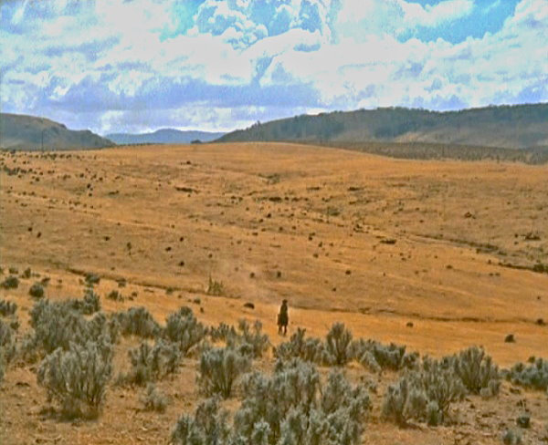
 Stock
footage from a Western, but which one?
Stock
footage from a Western, but which one?
THE PRISONER:
The Chimes of Big Ben
(Don Chaffey,
1967)
Unknown 1:
Number 6 and Nadia escape from the village in a jerry-rigged boat. They
are
spotted by the village authorities and have to jump overboard to avoid
Rover.
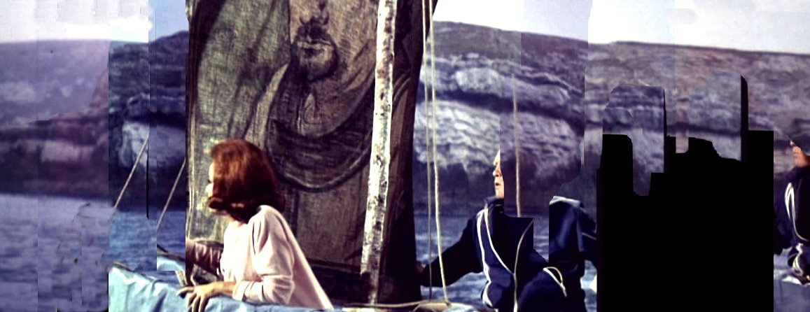
 The
Gunrunners' ship in Many Happy returns has similar
cliffs featured, filming occurred near Abersoch,
North Wales.
The
Gunrunners' ship in Many Happy returns has similar
cliffs featured, filming occurred near Abersoch,
North Wales.
 This episode
also featured location
filming around Folkestone.
This episode
also featured location
filming around Folkestone.
Unknown 2: Number 6 and Nadia are nailed into a crate destination London via Danzig (Gdansk) and Copenhagen. They are first taken by lorry to Gdansk.
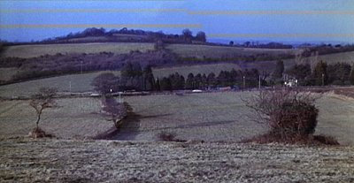
Unknown 3: The lorry continues its journey.
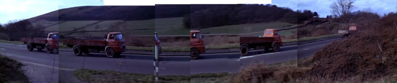
 This road is
next to a railway line.
This road is
next to a railway line.
 A major clue
from The Unmutual
web site:
Cameraman Robert Monks confirmed filming near Folkestone for The Chimes
of Big
Ben near Folkestone.
A major clue
from The Unmutual
web site:
Cameraman Robert Monks confirmed filming near Folkestone for The Chimes
of Big
Ben near Folkestone.
Unknown 4: The crate carrying Number 6 and Nadia is loaded onto a boat in Dazing (World Backgrounds 782).
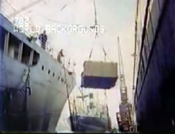
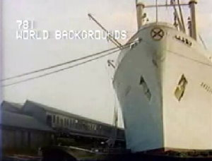
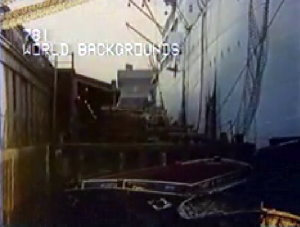
 This takes
place in one of London’s docks - other footage would suggest Tilbury -
can we confirm this from the buildings?
This takes
place in one of London’s docks - other footage would suggest Tilbury -
can we confirm this from the buildings?
This is the ship that features in 'THE PRISONER'
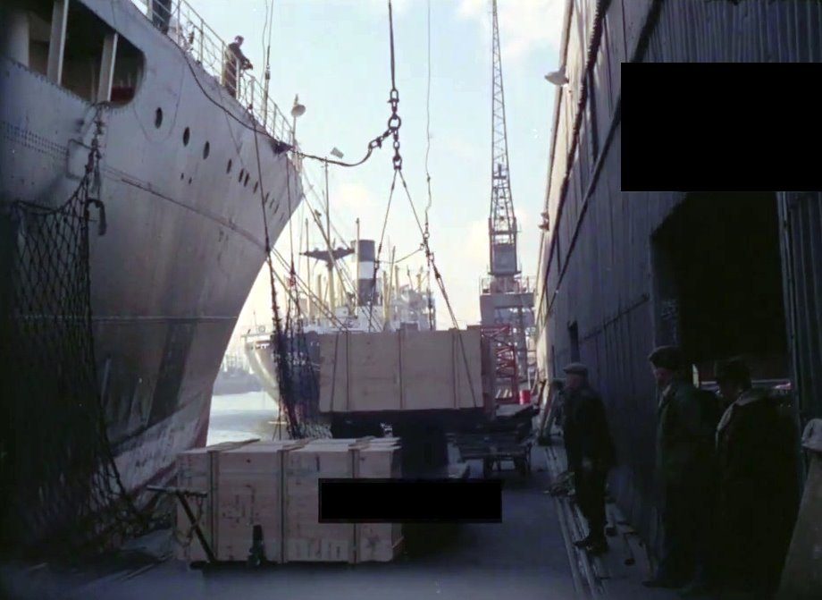
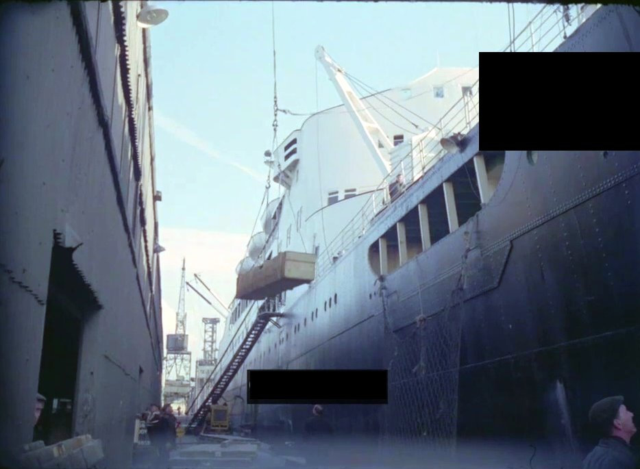
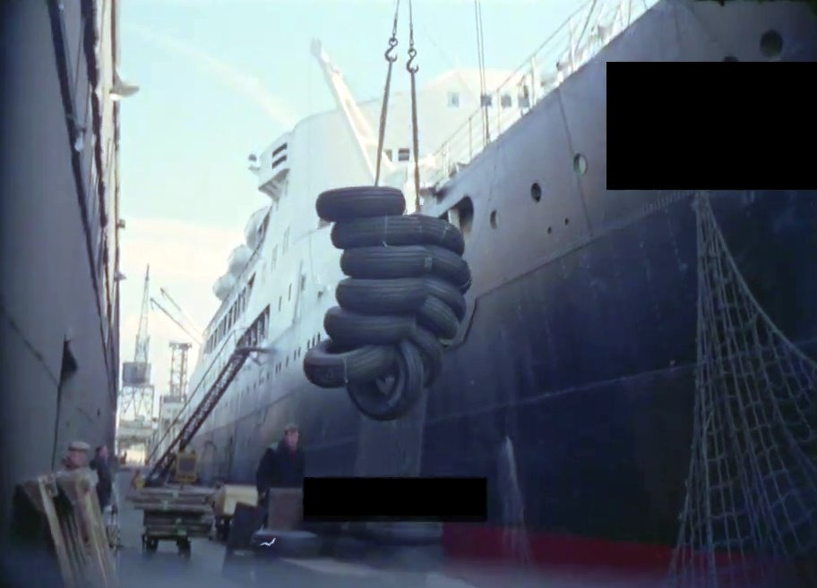
The clips also feature the ship 'The Amazon' on a different reel - so there is the chance that this is a different port.
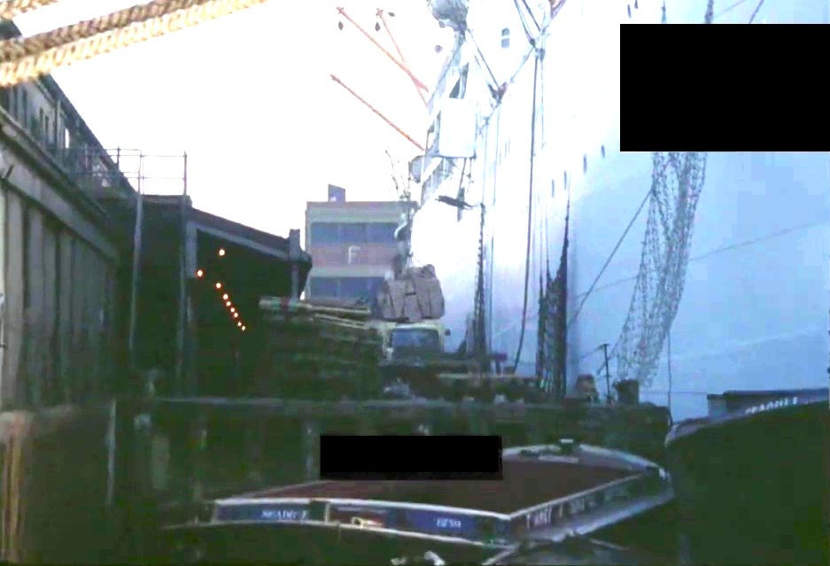
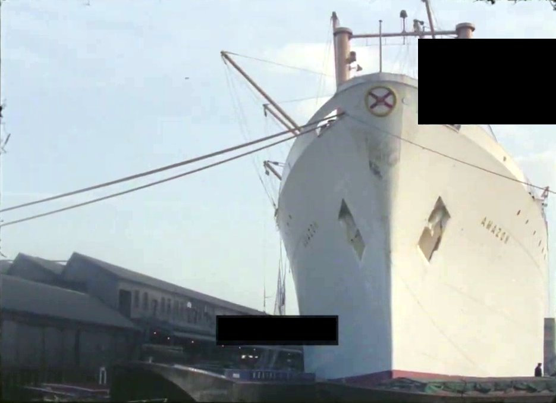
Unknown 5: Number Six cuts down a tree in the forest for purposes unknown.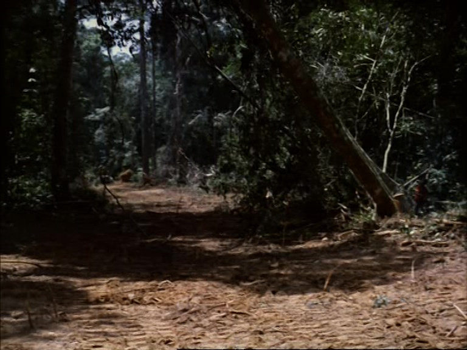
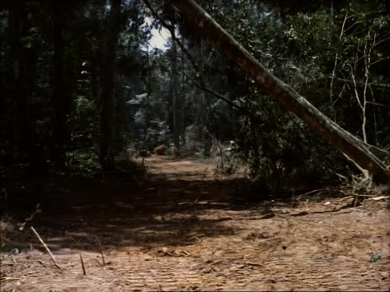
 Stock footage from Wrold Backgrounds?
Stock footage from Wrold Backgrounds?
THE PRISONER:
Do Not Forsake Me Oh My
Darling (Pat Jackson: August 1967)
Unknown 1:
One of the images in a set of “36 dreary and badly shot colour shots”
which
include this image of “Loch Ness” and could lead to the whereabouts of
Professor Seltzman.
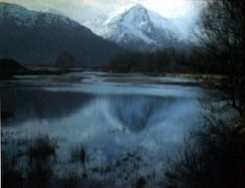
 Suggestted by Sietse Postma, August 2023 : Verzegnis Lake
Suggestted by Sietse Postma, August 2023 : Verzegnis Lake
Gotthardstrasse, Hospental, Uri, Switzerland: Number 6 enters Kandersfelt in his Lotus looking for Seltzman, Potter is not far behind (probably unsued footage from GOLDFINGER).
Furka Pass, Uri, Switzerland: Number 6 makes his way through the mountians to Kandersfelt in his Lotus, followed by Potter, to find Seltzman (footage from GOLDFINGER).
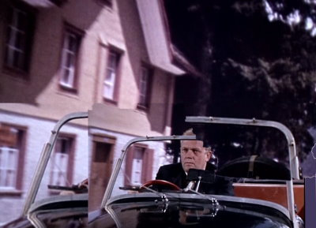
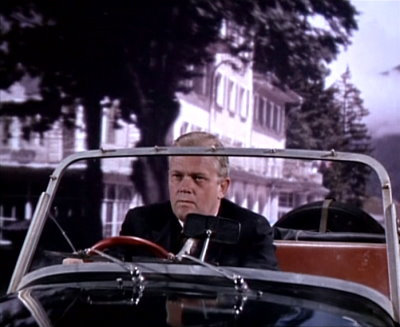
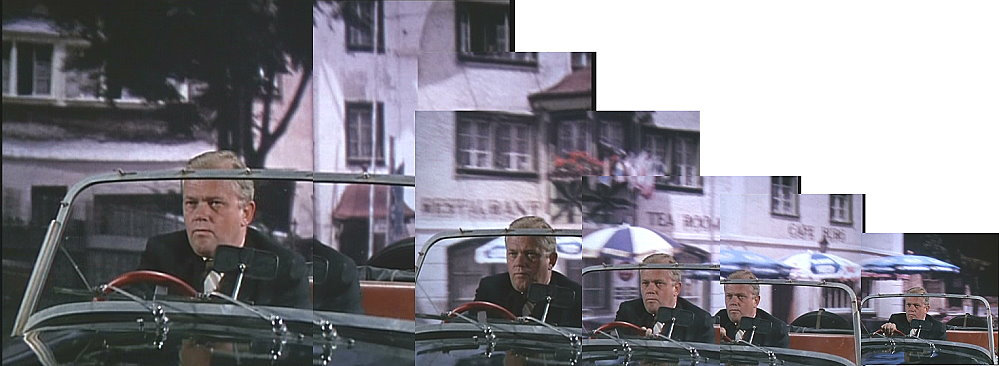
Unknown 2: Number 6 sets off across Europe to find Seltzman.
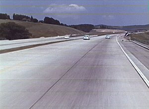
 Other stock
footage used in this episode features Salzburg and Seefeld
in Austria. This is listed by World Backgrounds as: 7286 - Full Front eyeline along Autobahn..”
Other stock
footage used in this episode features Salzburg and Seefeld
in Austria. This is listed by World Backgrounds as: 7286 - Full Front eyeline along Autobahn..”
THE PRISONER:
Many Happy Returns
(Patrick McGoohan:
March 1967)
Unknown 1:
After being shown the way to the road by the travellers Number 6
(Patrick McGoohan)
stumbles upon across a police road block.
and, thinking
they are looking for him, he
jumps into the back of a passing lorry.
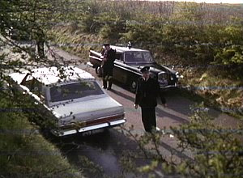
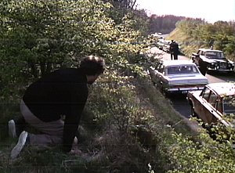
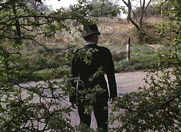
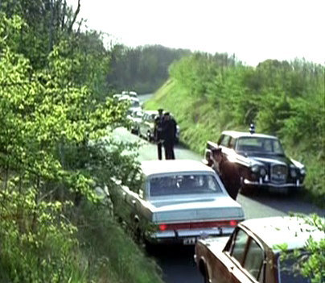
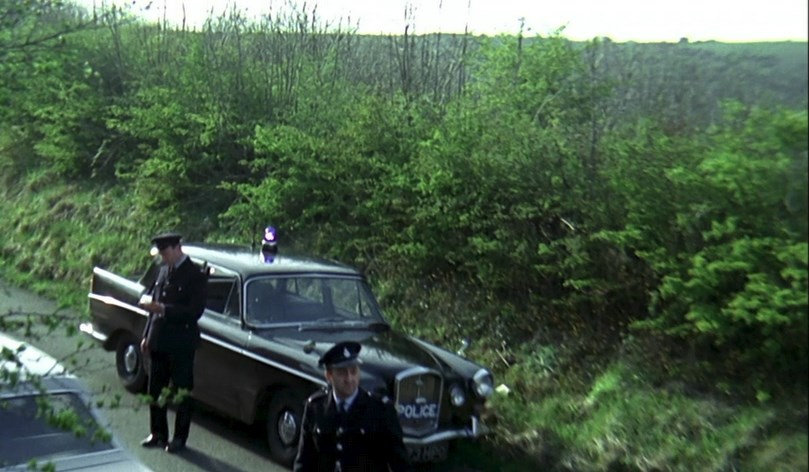
 My guess was
the A2103 near Beachy
Head as this was the only
local road anything like this.
My guess was
the A2103 near Beachy
Head as this was the only
local road anything like this.
 If
Unknown 6 is Dunstable Downs I would look at the area on Whipsnade
Road (B4541) north of Dunstable Downs Golf Course.
If
Unknown 6 is Dunstable Downs I would look at the area on Whipsnade
Road (B4541) north of Dunstable Downs Golf Course.
 Robert Monks has confirmed that these sequences were filmed in the Folkestone area.
Robert Monks has confirmed that these sequences were filmed in the Folkestone area.
Unknown 2: Thinking they are looking for him Number 6 (Patrick McGoohan) jumps into the back of a passing lorry
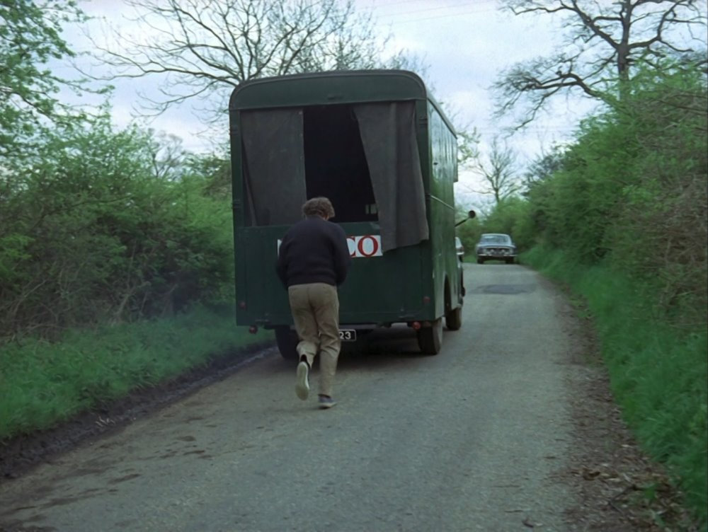
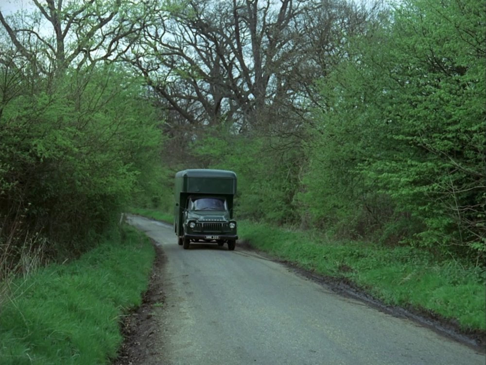
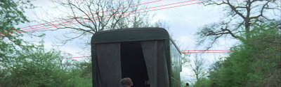
 Note that
there are two sets of power lines crossing this road.
Note that
there are two sets of power lines crossing this road.
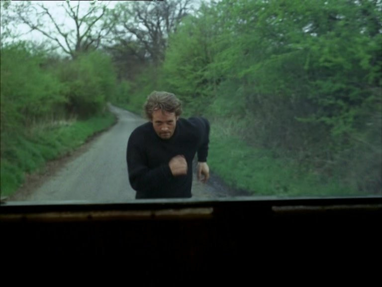
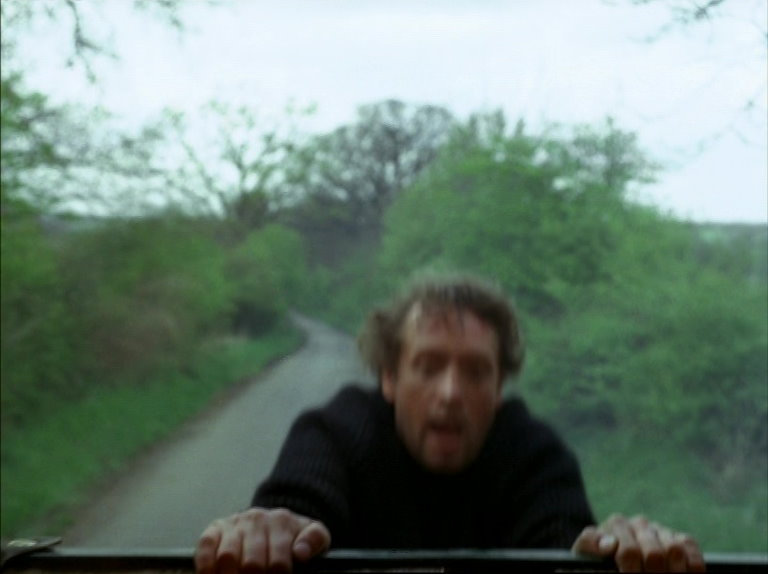
 The next
scene
we see the same lorry on Silver Hill, could this be close by?
The next
scene
we see the same lorry on Silver Hill, could this be close by?
Folkestone, South Downs Way/Beachy Head: After being washed ashore the civil servant (Patrick McGoohan) climbs to the cliff top and meets a man with a dog (Larry Taylor). He follows the man to his camp and is later shown the way to the road.
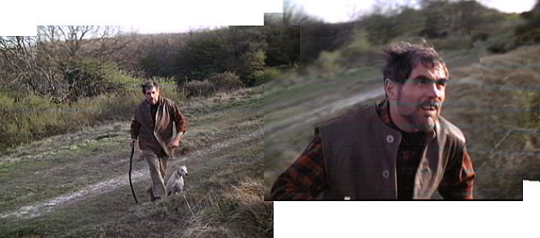
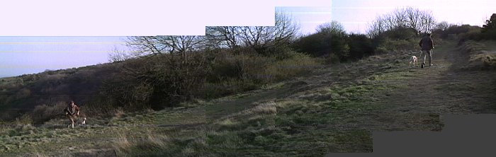
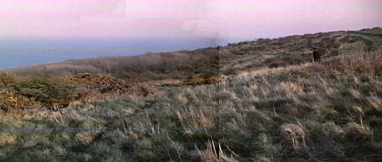
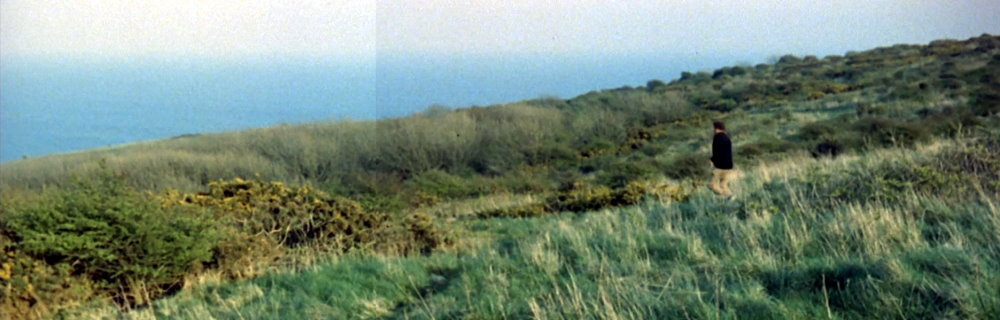
 Folkestone, South Downs Way/Beachy Head?
Folkestone, South Downs Way/Beachy Head?
THE PRISONER: A Change of Mind
Cape Clear Island from Clomacow, Skerin Island, Co. Cork, Eire -
Number 6 goes into the woods to consider his unmutual
status and ponders the freedom of
a passing birds
has he gazes across the bay.
Identified by Sietse Postma, April 2025
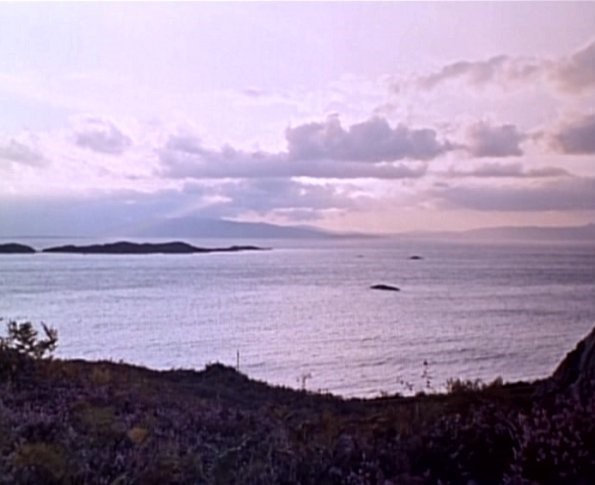
Think you know a spot? Need a bigger image? Email me.
< Previous | Index | Avengerland | Next >
Copyright © 2021 Anthony R. McKay